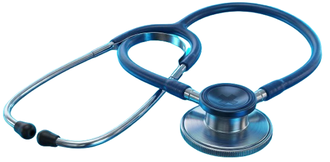
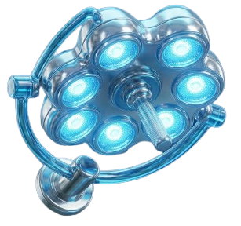

Hospital Dia com foco em cirurgias. Mais de 40 médicos especialistas, 24 especialidades médicas.
Conheça as especialidades mais procuradas em nosso Hospital Dia.
Tecnologia avançada para diagnósticos precisos e cirurgias seguras.
Procedimentos ambulatoriais e cirúrgicos com recuperação rápida no mesmo dia.
Exames diagnósticos avançados do sistema digestivo com máximo conforto.
Prevenção e diagnóstico completo de doenças do trato intestinal.
Cirurgias oculares especializadas para devolver a qualidade da sua visão.
Diagnóstico por imagem de alta resolução para diversas especialidades.
Do diagnóstico à recuperação, oferecemos uma estrutura completa de atendimento ambulatorial e cirúrgico com humanização em cada etapa do cuidado.

Mais de 40 médicos especialistas selecionados criteriosamente, comprometidos com o atendimento humanizado e os mais altos padrões.

Estrutura equipada para realizar mais de 20 tipos de procedimentos, com segurança e tecnologia avançada em cada etapa.
Exames realizados com equipamentos de última geração, garantindo resultados rápidos e confiáveis.
Modelo Hospital Dia: consulta, exame e cirurgia no mesmo dia. Você resolve sua saúde e volta para casa.
O Hospital Dia Dr. Giovani foi inaugurado em 2009 pelo médico Dr. Giovani Fonseca, juntamente com sua esposa, enfermeira, Elis Ribeiro, na cidade de Janaúba.
Realizamos cirurgias de pequeno e de médio porte em diversas especialidades na área da saúde, consultas médicas, exames e procedimentos ambulatoriais. Além disso, oferecemos mais de 20 especialidades na área da saúde.
O nosso corpo clínico é formado por médicos qualificados, competentes e experientes, atentos à importância da educação continuada e da atualização em novas tecnologias.

Atendemos diversos convênios e também na modalidade particular.
Tudo o que você precisa saber sobre o atendimento no Hospital Dia.